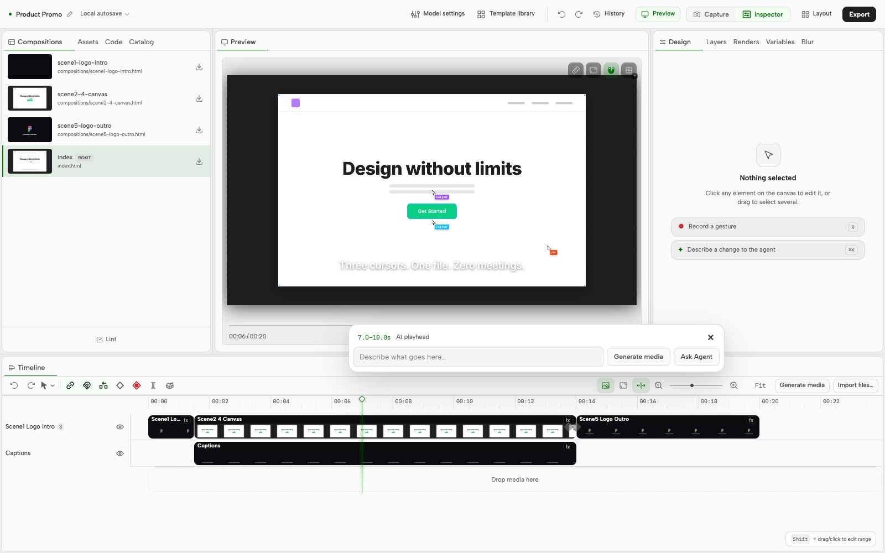

OpenMotion
PRODUCT FILM / 01
Made in
Codex.
Your reference. Your brand. Your cut.
01 / BRIEF
00:00 — 00:03
OpenMotion
LOCAL STUDIO / 02
Edit the
reveal.
“Hold this shot.
Let the headline land.”

02 / TIMELINE
00:03 — 00:08
OpenMotion
RELEASE CUT / 03
Great motion.
Made yours.
An editable project and an MP4.
03 / EXPORT
00:08 — 00:12